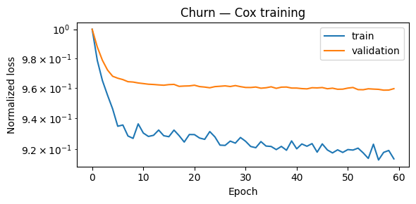
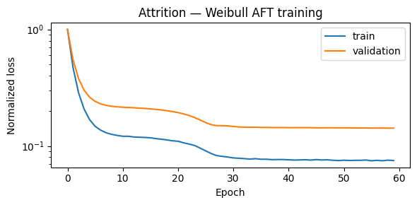
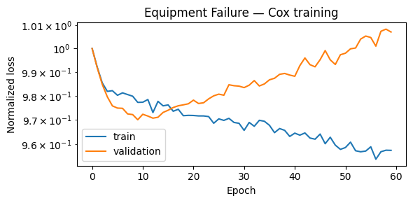
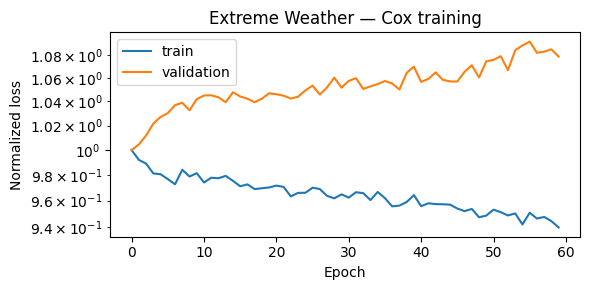
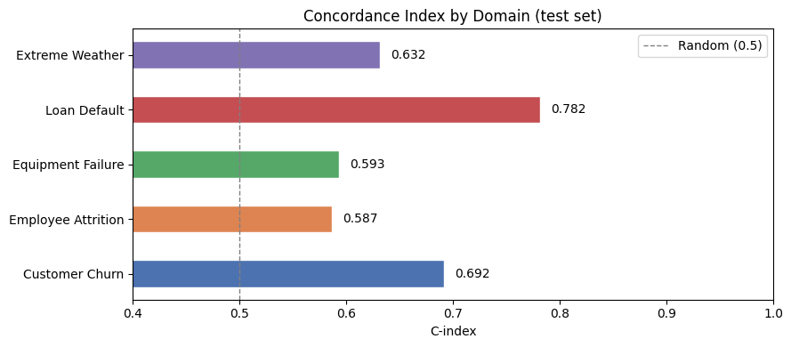

Survival Analysis Beyond Medicine#
Survival analysis is often associated with clinical trials, but the same mathematical framework applies to any domain where you are modeling time until an event in the presence of incomplete observations (censoring).
This notebook demonstrates TorchSurv across five real-world domains:
# |
Domain |
“Event” |
“Time” |
Model |
|---|---|---|---|---|
1 |
Customer Churn (Telecom) |
Subscription cancellation |
Duration as subscriber |
Cox |
2 |
Employee Attrition (HR) |
Employee resignation |
Tenure |
Weibull AFT |
3 |
Equipment Failure (Maintenance) |
Machine breakdown |
Operating hours |
Cox |
4 |
Loan Default (Finance) |
Default event |
Months since origination |
Weibull AFT |
5 |
Extreme Weather Events (Meteorology) |
Threshold exceedance |
Days between events |
Cox |
Each section:
Generates synthetic data with realistic distributions (fixed seeds for reproducibility)
Points to a real public dataset you can use as a drop-in replacement
Trains either a Cox or Weibull AFT model using a simple MLP backbone
Evaluates with C-index and time-dependent AUC
A final section compares performance across all domains.
[1]:
# Optional: install dependencies if running in a fresh environment
# %pip install torchsurv matplotlib scikit-learn
[2]:
import warnings
warnings.filterwarnings("ignore")
[3]:
import matplotlib.pyplot as plt
import numpy as np
import torch
import torch.nn as nn
from sklearn.model_selection import train_test_split
from sklearn.preprocessing import StandardScaler
from torch.utils.data import DataLoader, Dataset
from torchsurv.loss import cox, weibull
from torchsurv.metrics.auc import Auc
from torchsurv.metrics.cindex import ConcordanceIndex
torch.manual_seed(42)
np.random.seed(42)
1. Customer Churn — Telecom / SaaS#
Scenario: A telecom company wants to predict when a subscriber will cancel their contract. The event is churn (cancellation). The time is months as a subscriber. Many customers are still active at the observation cutoff — these are right-censored observations.
Features: Monthly charges, contract type (encoded), number of support calls, tenure group, usage level.
📂 Real Dataset: Telco Customer Churn — Kaggle 7,043 customers with 20 features including contract type, monthly charges, and churn indicator. In this notebook we use synthetic data with matching statistical properties to keep the example self-contained and fast to run.
[5]:
# ── Synthetic Churn Data ──────────────────────────────────────────────────────
rng = np.random.default_rng(0)
N = 800
monthly_charges = rng.uniform(20, 120, N) # USD per month
support_calls = rng.poisson(2, N).astype(float) # number of support interactions
contract_type = rng.choice([0, 1, 2], N).astype(float) # 0=month-to-month, 1=1yr, 2=2yr
usage_level = rng.normal(5, 1.5, N).clip(0) # GB data used per month
# Log-relative hazard: high charges + many calls + month-to-month contract -> higher churn risk
log_hz_true = (
0.02 * monthly_charges
+ 0.3 * support_calls
- 0.5 * contract_type # longer contracts = lower churn
- 0.1 * usage_level
+ rng.normal(0, 0.3, N)
)
# Generate survival times from exponential proportional hazards
baseline_scale = 36.0 # months
churn_time = rng.exponential(baseline_scale / np.exp(log_hz_true))
# Censoring: observation window of 48 months
censoring_time = rng.uniform(1, 48, N)
time_obs = np.minimum(churn_time, censoring_time)
event_obs = (churn_time <= censoring_time).astype(bool)
print(f"Churn rate: {event_obs.mean():.1%} | Median tenure: {np.median(time_obs):.1f} months")
X_churn = np.column_stack([monthly_charges, support_calls, contract_type, usage_level])
Churn rate: 72.8% | Median tenure: 6.3 months
[6]:
# ── Data loaders ─────────────────────────────────────────────────────────────
loader_train_ch, loader_val_ch, loader_test_ch = make_loaders(X_churn, event_obs, time_obs)
# ── Cox model ────────────────────────────────────────────────────────────────
torch.manual_seed(1)
cox_churn = MLP(in_features=4, out_features=1)
train_losses_ch, val_losses_ch = train(
cox_churn,
loader_train_ch,
loader_val_ch,
loss_fn=lambda out, e, t: cox.neg_partial_log_likelihood(out, e, t),
)
plot_losses(train_losses_ch, val_losses_ch, title="Churn — Cox training")

[7]:
results.append(evaluate_cox(cox_churn, loader_test_ch, "Customer Churn"))
==================================================
Customer Churn — Cox Model Results
==================================================
C-index : 0.6917
95% CI : tensor([0.5998, 0.7835])
AUC (median t) : 0.7358
==================================================
2. Employee Attrition — HR Analytics#
Scenario: An HR team wants to model when an employee is likely to resign. The event is resignation. The time is months of tenure. Employees still at the company at the snapshot date are right-censored.
Features: Job satisfaction score, distance from home, overtime flag, salary band, years since last promotion.
📂 Real Dataset: IBM HR Analytics Employee Attrition — Kaggle 1,470 employees with 35 features including satisfaction scores, overtime, and attrition indicator. In this notebook we use synthetic data with matching statistical properties to keep the example self-contained and fast to run.
[8]:
# ── Synthetic Attrition Data ─────────────────────────────────────────────────
rng = np.random.default_rng(1)
N = 800
satisfaction = rng.uniform(1, 5, N) # 1=low, 5=high job satisfaction
distance_home = rng.exponential(15, N) # km from home
overtime = rng.choice([0, 1], N, p=[0.7, 0.3]).astype(float)
salary_band = rng.choice([1, 2, 3, 4], N).astype(float) # 1=lowest, 4=highest
yrs_since_promo = rng.poisson(2, N).astype(float)
# log_scale scales with time in Weibull AFT, so positive coeff = longer survival (lower resignation risk)
log_scale = (
0.3 * satisfaction
- 0.01 * distance_home
- 0.4 * overtime
+ 0.2 * salary_band
- 0.1 * yrs_since_promo
+ rng.normal(0, 0.3, N)
)
scale = np.exp(log_scale + 3.0) # baseline ~20 months
shape = 1.5
attrition_time = scale * rng.weibull(shape, N)
censoring_time = rng.uniform(1, 60, N)
time_obs_att = np.minimum(attrition_time, censoring_time)
event_obs_att = (attrition_time <= censoring_time).astype(bool)
print(f"Resignation rate: {event_obs_att.mean():.1%} | Median tenure: {np.median(time_obs_att):.1f} months")
X_att = np.column_stack([satisfaction, distance_home, overtime, salary_band, yrs_since_promo])
Resignation rate: 37.1% | Median tenure: 20.5 months
[9]:
# ── Data loaders ─────────────────────────────────────────────────────────────
loader_train_att, loader_val_att, loader_test_att = make_loaders(X_att, event_obs_att, time_obs_att)
# ── Weibull AFT model ────────────────────────────────────────────────────────
torch.manual_seed(2)
weibull_att = MLP(in_features=5, out_features=2)
def weibull_loss(out, e, t):
return weibull.neg_log_likelihood_weibull(out, e, t)
train_losses_att, val_losses_att = train(weibull_att, loader_train_att, loader_val_att, loss_fn=weibull_loss)
plot_losses(train_losses_att, val_losses_att, title="Attrition — Weibull AFT training")

[10]:
results.append(evaluate_weibull(weibull_att, loader_test_att, "Employee Attrition"))
==================================================
Employee Attrition — Weibull AFT Model Results
==================================================
C-index : 0.5867
95% CI : tensor([0.4423, 0.7311])
AUC (median t) : 0.6214
==================================================
3. Equipment Failure — Predictive Maintenance#
Scenario: A manufacturer monitors industrial machines and wants to predict when each unit will fail. The event is mechanical failure. The time is operating hours. Machines still running at the end of the monitoring window are right-censored.
Features: Average load (%), operating temperature (°C), vibration level, machine age (years), maintenance cycles.
📂 Real Dataset: NASA CMAPSS Turbofan Engine Degradation Dataset Engine run-to-failure data with multiple sensor readings. Widely used benchmark for RUL prediction. In this notebook we use synthetic data with matching statistical properties to keep the example self-contained and fast to run.
[11]:
# ── Synthetic Equipment Failure Data ──────────────────────────────────────────
rng = np.random.default_rng(2)
N = 800
load = rng.uniform(40, 100, N) # % capacity
temperature = rng.normal(75, 20, N) # °C operating temperature
vibration = rng.exponential(0.5, N) # vibration index
age_years = rng.uniform(0, 12, N) # years in service
maint_cycles = rng.poisson(5, N).astype(float) # # of maintenance events
log_hz_true = (
0.01 * load + 0.01 * temperature + 0.5 * vibration + 0.08 * age_years - 0.1 * maint_cycles + rng.normal(0, 0.4, N)
)
baseline_hours = 2000.0
time_failure = rng.exponential(baseline_hours / np.exp(log_hz_true))
censoring_h = rng.uniform(200, 4000, N)
time_obs_eq = np.minimum(time_failure, censoring_h)
event_obs_eq = (time_failure <= censoring_h).astype(bool)
print(f"Failure rate: {event_obs_eq.mean():.1%} | Median observed hours: {np.median(time_obs_eq):.0f}")
X_eq = np.column_stack([load, temperature, vibration, age_years, maint_cycles])
Failure rate: 91.4% | Median observed hours: 219
[12]:
# ── Data loaders ─────────────────────────────────────────────────────────────
loader_train_eq, loader_val_eq, loader_test_eq = make_loaders(X_eq, event_obs_eq, time_obs_eq)
# ── Cox model ────────────────────────────────────────────────────────────────
torch.manual_seed(3)
cox_eq = MLP(in_features=5, out_features=1)
train_losses_eq, val_losses_eq = train(
cox_eq,
loader_train_eq,
loader_val_eq,
loss_fn=lambda out, e, t: cox.neg_partial_log_likelihood(out, e, t),
)
plot_losses(train_losses_eq, val_losses_eq, title="Equipment Failure — Cox training")

[13]:
results.append(evaluate_cox(cox_eq, loader_test_eq, "Equipment Failure"))
==================================================
Equipment Failure — Cox Model Results
==================================================
C-index : 0.5932
95% CI : tensor([0.4863, 0.7002])
AUC (median t) : 0.5961
==================================================
4. Loan Default — Credit Risk#
Scenario: A lender wants to model when a borrower will default on a loan. The event is default. The time is months since loan origination. Loans that were fully repaid or are still active are right-censored.
Features: Loan amount (USD), credit score, debt-to-income ratio, employment length (years), loan purpose (encoded).
📂 Real Dataset: Give Me Some Credit — Kaggle 150,000 borrowers with features including revolving utilization, age, and 90-day delinquency history. In this notebook we use synthetic data with matching statistical properties to keep the example self-contained and fast to run.
[14]:
# ── Synthetic Loan Default Data ──────────────────────────────────────────────
rng = np.random.default_rng(3)
N = 800
loan_amount = rng.uniform(5000, 50000, N)
credit_score = rng.normal(680, 80, N).clip(300, 850)
dti_ratio = rng.beta(2, 5, N) * 60 # debt-to-income (%)
emp_length = rng.exponential(4, N).clip(0, 20) # years employed
loan_purpose = rng.choice([0, 1, 2, 3], N).astype(float) # 0=personal,1=auto,2=home,3=education
log_scale_true = (
-0.0001 * loan_amount
+ 0.005 * credit_score
- 0.03 * dti_ratio
+ 0.05 * emp_length
- 0.1 * loan_purpose
+ rng.normal(0, 0.3, N)
)
scale = np.exp(log_scale_true + 3.5) # baseline ~33 months
shape = 1.2
time_default = scale * rng.weibull(shape, N)
# Loan term is 36 or 60 months
loan_term = rng.choice([36, 60], N).astype(float)
time_obs_ln = np.minimum(time_default, loan_term)
event_obs_ln = (time_default <= loan_term).astype(bool)
print(f"Default rate: {event_obs_ln.mean():.1%} | Median time to default/payoff: {np.median(time_obs_ln):.1f} months")
X_ln = np.column_stack([loan_amount, credit_score, dti_ratio, emp_length, loan_purpose])
Default rate: 60.8% | Median time to default/payoff: 27.5 months
[15]:
# ── Data loaders ─────────────────────────────────────────────────────────────
loader_train_ln, loader_val_ln, loader_test_ln = make_loaders(X_ln, event_obs_ln, time_obs_ln)
# ── Weibull AFT model ────────────────────────────────────────────────────────
torch.manual_seed(4)
weibull_ln = MLP(in_features=5, out_features=2)
train_losses_ln, val_losses_ln = train(weibull_ln, loader_train_ln, loader_val_ln, loss_fn=weibull_loss)
plot_losses(train_losses_ln, val_losses_ln, title="Loan Default — Weibull AFT training")

[16]:
results.append(evaluate_weibull(weibull_ln, loader_test_ln, "Loan Default"))
==================================================
Loan Default — Weibull AFT Model Results
==================================================
C-index : 0.7817
95% CI : tensor([0.6919, 0.8715])
AUC (median t) : 0.8634
==================================================
5. Extreme Weather Events — Meteorology#
Scenario: A meteorologist wants to model when a weather station will next record an extreme temperature event (>95th percentile). The event is threshold exceedance. The time is days between consecutive extreme events at a station. Stations still under observation (no event yet) are right-censored.
Features: Average summer temperature anomaly (°C), elevation (m), coastal proximity (0/1), mean annual rainfall (mm), latitude zone (encoded).
📂 Real Dataset: NOAA Storm Events Database Detailed records of storm events across the US with start/end dates, location, and severity — suitable for time-to-event modeling of extreme weather. In this notebook we use synthetic data with matching statistical properties to keep the example self-contained and fast to run.
[17]:
# ── Synthetic Extreme Weather Data ───────────────────────────────────────────
rng = np.random.default_rng(4)
N = 800
temp_anomaly = rng.normal(0.8, 0.5, N) # °C above historical mean
elevation = rng.exponential(300, N) # meters
coastal = rng.choice([0, 1], N, p=[0.6, 0.4]).astype(float)
rainfall_mm = rng.normal(600, 200, N).clip(50) # mm/year
latitude_zone = rng.choice([0, 1, 2], N).astype(float) # 0=tropical,1=temperate,2=polar
log_hz_true = (
0.4 * temp_anomaly
- 0.001 * elevation
- 0.2 * coastal # coastal areas more buffered
- 0.0005 * rainfall_mm
+ 0.1 * latitude_zone
+ rng.normal(0, 0.3, N)
)
baseline_days = 120.0
time_weather = rng.exponential(baseline_days / np.exp(log_hz_true))
obs_window = rng.uniform(30, 365, N)
time_obs_wt = np.minimum(time_weather, obs_window)
event_obs_wt = (time_weather <= obs_window).astype(bool)
print(f"Event rate: {event_obs_wt.mean():.1%} | Median inter-event gap: {np.median(time_obs_wt):.0f} days")
X_wt = np.column_stack([temp_anomaly, elevation, coastal, rainfall_mm, latitude_zone])
Event rate: 68.2% | Median inter-event gap: 73 days
[18]:
# ── Data loaders ─────────────────────────────────────────────────────────────
loader_train_wt, loader_val_wt, loader_test_wt = make_loaders(X_wt, event_obs_wt, time_obs_wt, batch_size=32)
# ── Cox model ────────────────────────────────────────────────────────────────
torch.manual_seed(5)
cox_wt = MLP(in_features=5, out_features=1)
train_losses_wt, val_losses_wt = train(
cox_wt,
loader_train_wt,
loader_val_wt,
loss_fn=lambda out, e, t: cox.neg_partial_log_likelihood(out, e, t),
)
plot_losses(train_losses_wt, val_losses_wt, title="Extreme Weather — Cox training")

[19]:
results.append(evaluate_cox(cox_wt, loader_test_wt, "Extreme Weather"))
==================================================
Extreme Weather — Cox Model Results
==================================================
C-index : 0.6317
95% CI : tensor([0.5160, 0.7475])
AUC (median t) : 0.6831
==================================================
6. Cross-Domain Comparison#
Below we summarize the C-index and AUC (at median event time) across all five domains.
A C-index of 0.5 is equivalent to random guessing; 1.0 is perfect discrimination. The same interpretation holds for AUC.
[20]:
import pandas as pd
summary = pd.DataFrame(results)
summary = summary.set_index("domain")
summary.columns = ["Model", "C-index", "AUC (median t)"]
summary["C-index"] = summary["C-index"].map("{:.4f}".format)
summary["AUC (median t)"] = summary["AUC (median t)"].map("{:.4f}".format)
print(summary.to_string())
Model C-index AUC (median t)
domain
Customer Churn Cox 0.6917 0.7358
Employee Attrition Weibull AFT 0.5867 0.6214
Equipment Failure Cox 0.5932 0.5961
Loan Default Weibull AFT 0.7817 0.8634
Extreme Weather Cox 0.6317 0.6831
[ ]:
# Visual comparison
fig, ax = plt.subplots(figsize=(9, 4))
domains = [r["domain"] for r in results]
cindexes = [r["cindex"] for r in results]
colors = ["#4C72B0", "#DD8452", "#55A868", "#C44E52", "#8172B3"]
bars = ax.barh(domains, cindexes, color=colors, edgecolor="white", height=0.5)
ax.axvline(0.5, color="gray", linestyle="--", linewidth=1, label="Random (0.5)")
ax.set_xlim(0.4, 1)
ax.set_xlabel("C-index")
ax.set_title("Concordance Index by Domain (test set)")
ax.legend()
for bar, val in zip(bars, cindexes):
ax.text(val + 0.01, bar.get_y() + bar.get_height() / 2, f"{val:.3f}", va="center", fontsize=10)
plt.tight_layout()
plt.show()

Summary#
This notebook demonstrated that TorchSurv applies cleanly to any time-to-event problem:
Same API regardless of domain — swap in your data and your architecture
Cox model: great when the proportional hazards assumption holds; outputs a risk ranking
Weibull AFT model: directly models survival time; outputs interpretable scale/shape parameters
Censoring is handled automatically — no need to drop or impute incomplete observations
Next steps#
Replace synthetic data with the linked real datasets for each domain
Try deeper architectures or domain-specific features
Use
cindex.compare(other_cindex)to test whether one model significantly outperforms anotherSee the TorchSurv documentation for time-varying covariates, momentum training, and more